VIDEO
Librerías
library(ggplot2)
library(corrplot)
library(gridExtra)
library(rstatix)
#library(car)
library(dplyr)
library(ggpubr)
Teorema del Límite Central
“Dadas muestras aleatorias e independientes con N observaciones cada una, la distribución de sus medias se aproxima a una distribución normal conforme N incrementa, INDEPENDIENTEMENTE de la distribución poblacional”; es decir, mientras N sea grande, \(\bar{x} \sim Normal\). Para probar esto podemos hacer un ejercicio en el cual simulemos una población con distribución Gamma, cuya zona de mayor densidad se encuentra desplazada a la izquierda:
set.seed(0)
datos <- data.frame(x = 1:1000, y = rgamma(1000, 1))
gamma <- ggplot(data = datos, aes(y)) +
geom_density(fill = rgb(118,78,144, maxColorValue = 255), alpha = 0.5, colour = "white") +
theme_bw() +
labs(title = "Distribución Gamma",
x = element_blank(),
y = element_blank()) +
theme(text = element_text(colour = "gray40"))
#cairo_pdf("gamma.pdf", family = "Montserrat", height = 5, width = 5*1.6, pointsize = 20)
gamma
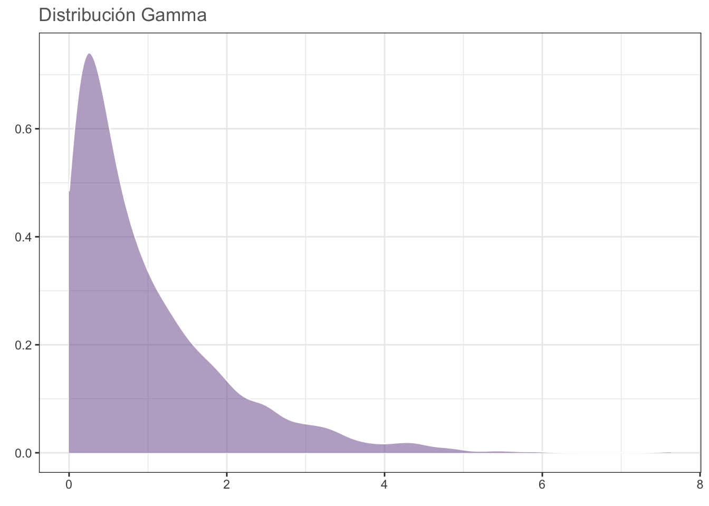
#dev.off()
Con nuestra población definida, podemos seleccionar algunos tamaños de muestra, realizar 1000 muestreos aleatorios, obtener la media de cada muestreo y graficar su distribución. Primero para N = 3
N = 3
medias <- data.frame(x = 1:1000, y = replicate(1000, mean(sample(datos$y, N))))
dist_n3 <- ggplot(data = medias, aes(y)) +
geom_density(fill = "dodgerblue4", alpha = 0.5, colour = "white") +
theme_bw() +
labs(title = sprintf("Distribución muestreal con N = %d", N),
x = element_blank(),
y = element_blank()) +
theme(text = element_text(colour = "gray40"))
#cairo_pdf("n_3.pdf", family = "Montserrat", height = 5, width = 5*1.6, pointsize = 20)
dist_n3
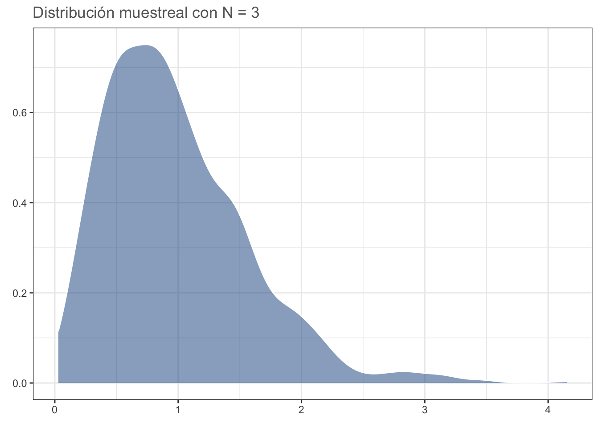
#dev.off()
Ahora para N = 10. La distribución se aproxima más a una distribución normal.
N = 10
medias <- data.frame(x = 1:1000, y = replicate(1000, mean(sample(datos$y, N))))
dist_n10 <- ggplot(data = medias, aes(y)) +
geom_density(fill = "dodgerblue4", alpha = 0.5, colour = "white") +
theme_bw() +
labs(title = sprintf("Distribución muestreal con N = %d", N),
x = element_blank(),
y = element_blank()) +
theme(text = element_text(colour = "gray40"))
#cairo_pdf("n_10.pdf", family = "Montserrat", height = 5, width = 5*1.6, pointsize = 20)
dist_n10
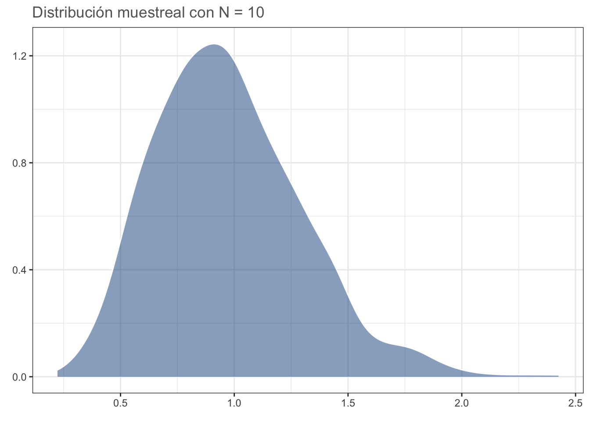
#dev.off()
Con N = 30 la distribución es más cercana a una normal que a la gamma, por lo que usualmente se acepta que: con N≥30 la distribución muestreal de la media DEBERÁ ser normal:
N = 30
medias <- data.frame(x = 1:1000, y = replicate(1000, mean(sample(datos$y, N))))
dist_n30 <- ggplot(data = medias, aes(y)) +
geom_density(fill = "dodgerblue4", alpha = 0.5, colour = "white") +
theme_bw() +
labs(title = sprintf("Distribución muestreal con N = %d", N),
x = element_blank(),
y = element_blank()) +
theme(text = element_text(colour = "gray40"))
#cairo_pdf("n_30.pdf", family = "Montserrat", height = 5, width = 5*1.6, pointsize = 20)
dist_n30
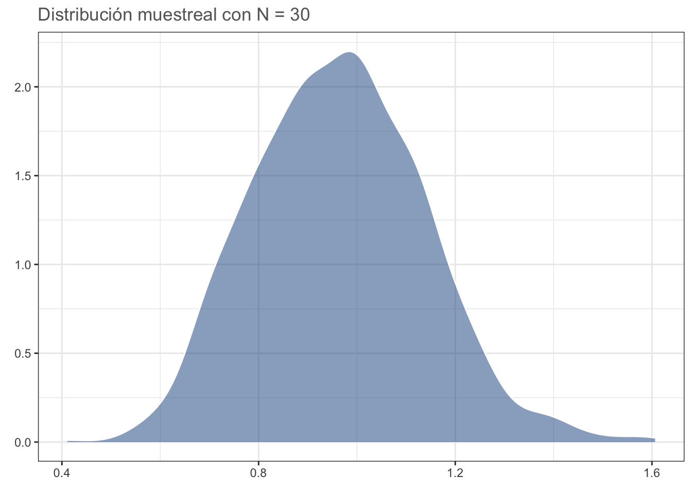
#dev.off()
Para comprobar, hagámos el ejercicio con una distribución uniforme; es decir, en la cual todos los valores tienen la misma probabilidad de ser obtenidos (desviaciones debido al generador de números “aleatorios”):
N = 30
datos <- data.frame(x = 1:1000, y = runif(1000))
unif <- ggplot(data = datos, aes(y)) +
geom_density(fill = rgb(118,78,144, maxColorValue = 255), alpha = 0.5, colour = "white") +
theme_bw() +
labs(title = "Distribución \"uniforme\"",
x = element_blank(),
y = element_blank()) +
theme(text = element_text(colour = "gray40"))
#cairo_pdf("unif.pdf", family = "Montserrat", height = 5, width = 5*1.6, pointsize = 20)
unif
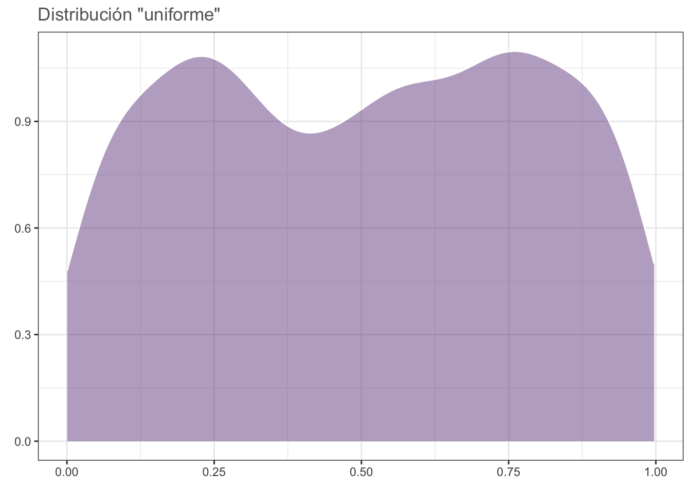
#dev.off()
medias <- data.frame(x = 1:1000, y = replicate(1000, mean(sample(datos$y, N))))
dist_n30 <- ggplot(data = medias, aes(y)) +
geom_density(fill = "dodgerblue4", alpha = 0.5, colour = "white") +
theme_bw() +
labs(title = sprintf("Distribución muestreal con N = %d", N),
x = element_blank(),
y = element_blank()) +
theme(text = element_text(colour = "gray40"))
#cairo_pdf("n_30u.pdf", family = "Montserrat", height = 5, width = 5*1.6, pointsize = 20)
dist_n30
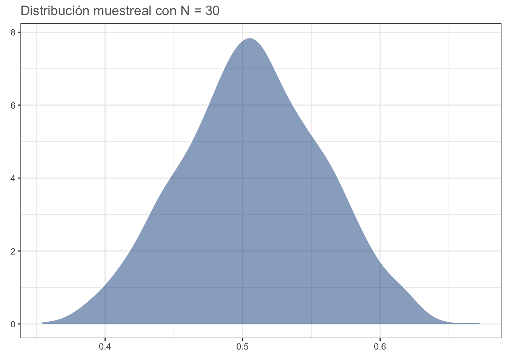
#dev.off()
Un aspecto importante a considerar es la “Primera Propiedad Conocida” de la distribución normal: dadas muestras aleatorias e independientes con N observaciones cada una (tomadas de una distribución normal), la distribución de medias muestreales es normal e insesgada (i.e., centrada en la media poblacional), independientemente del tamaño de N. Por lo tanto, aún un N de 1 debería dar una distribución parecida a la normal. Comprobemos:
N = 1
datos <- data.frame(x = 1:1000, y = rnorm(1000))
norm <- ggplot(data = datos, aes(y)) +
geom_density(fill = rgb(118,78,144, maxColorValue = 255), alpha = 0.5, colour = "white") +
theme_bw() +
labs(title = "Distribución Normal",
x = element_blank(),
y = element_blank()) +
theme(text = element_text(colour = "gray40"))
#cairo_pdf("norm.pdf", family = "Montserrat", height = 5, width = 5*1.6, pointsize = 20)
norm
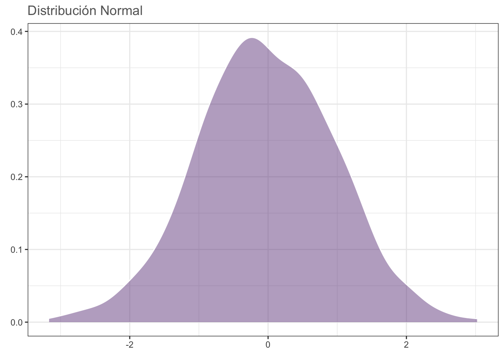
#dev.off()
medias <- data.frame(x = 1:1000, y = replicate(1000, mean(sample(datos$y, N))))
dist_n1 <- ggplot(data = medias, aes(y)) +
geom_density(fill = "dodgerblue4", alpha = 0.5, colour = "white") +
theme_bw() +
labs(title = sprintf("Distribución muestreal con N = %d", N),
x = element_blank(),
y = element_blank()) +
theme(text = element_text(colour = "gray40"))
#cairo_pdf("n_1.pdf", family = "Montserrat", height = 5, width = 5*1.6, pointsize = 20)
dist_n1
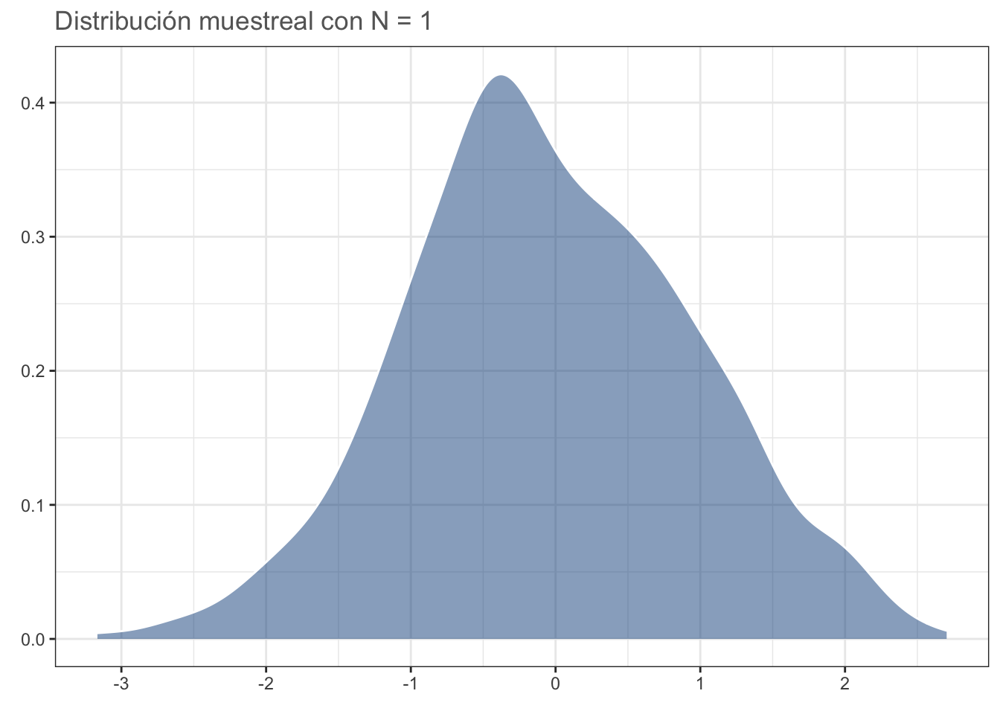
#dev.off()
La implicación de esta propiedad es que entre menos “normal” (en términos de su distribución estadística) sea nuestra población de estudio, necesitaremos un mayor tamaño de muestra para que nuestra distribución muestral de la media sea normal. El problema surge cuando nos debemos de enfrentar a tamaños de muestra pequeños (n < 30). Aunque siempre podemos asumir (literalmente) que nuestra población se encuentra normalmente distribuida y “capitalizar en la robustez del modelo estadístico subyacente”, abusando del TLC, o reconocer que tamaños de muestra más pequeños nos pueden acercar lo suficiente (n > 30 es para casos extremos). La tercera opción es la evaluación formal, la cual consiste en hacer una prueba de bondad de ajuste para conocer si nuestros datos se desvían o no de una distribución normal teórica. Antes de entrar a esos métodos, analicemos la prueba de bondad de ajuste más conocida: la prueba \(\chi^2\) de independencia.
Pruebas de bondad de ajuste: \(\chi^2\)
Esta prueba nos permite probar si la distribución de nuestros datos (frecuencias de variables nominales) son iguales a una distribución teórica. El ejemplo más sencillo lo tenemos al evaluar si la distribución de sexos en una población es diferente de 1:1. En este caso, la distribución de nuestros datos es binomial (dos categorías, verdadero/falso, éxito/fracaso, macho/hembra, etc.). En nuestro muestreo contamos 142 machos y 190 hembras. Coloquemos esos datos en un objeto y realicemos la prueba:
sexos <- c(machos = 142, hembras = 190)
sex_chi <- chisq.test(sexos)
sex_chi
##
## Chi-squared test for given probabilities
##
## data: sexos
## X-squared = 6.9398, df = 1, p-value = 0.00843
Veamos la distribución teórica gráficamente y veamos la ubicación del estadístico de prueba:
chi_data <- data.frame(x = rchisq(1000, 1))
chisq_plot <- ggplot(data = chi_data, aes(x)) +
geom_density(fill = rgb(118,78,144, maxColorValue = 255), alpha = 0.5, colour = "white") +
geom_vline(xintercept = sex_chi$statistic, color = "firebrick") +
annotate(geom = "text", x = sex_chi$statistic+1.1, y = 1, label = sprintf("X^2 = %.2f", round(sex_chi$statistic, 2))) +
theme_bw() +
labs(title = sprintf("Distribución X^2 teórica (g.l = %d)", sex_chi$parameter),
x = element_blank(),
y = element_blank()) +
theme(text = element_text(colour = "gray40"))
#cairo_pdf("chi_plot.pdf", family = "Montserrat", height = 5, width = 5*1.6, pointsize = 20)
chisq_plot
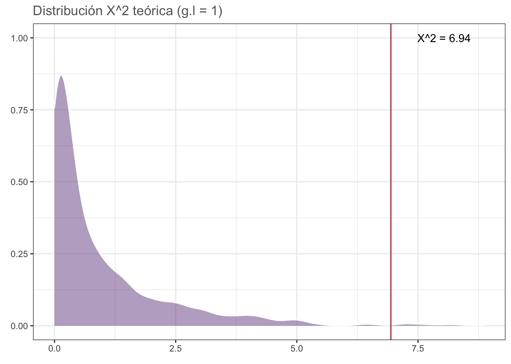
#dev.off()
Partiendo del valor de p podemos concluir que la proporción fue diferente de nuestro modelo teórico 1:1, pero ¿qué pasa si nos interesara comprobar si es diferente a otra proporción, por ejemplo 40% machos y 60% hembras? En ese caso únicamente debemos de proporcionar un vector p en el cual establezcamos la probabilidad correspondiente a cada grupo:
chisq.test(sexos, p = c(0.4, 0.6))
##
## Chi-squared test for given probabilities
##
## data: sexos
## X-squared = 1.0622, df = 1, p-value = 0.3027
Aquí nuestros datos no ridiculizan a nuestra hipótesis de nulidad, por lo que no podemos rechazarla. Un ejemplo más complejo es el de la presentación, en donde tratamos de probar si el proceso de vacunación hizo alguna diferencia en el estado de salud de los empleados o, en otras palabras, ¿la incidencia de pneumonía fue la misma, INDEPENDIENTEMENTE de si los empleados se vacunaron o no? Al igual que en el caso anterior, coloquemos los datos en un objeto:
vacunas <- data.frame(no_vacuna = c(23, 8, 61), vacuna = c(5, 10, 77), row.names = c("neumococo", "otra_neumonia", "sin_neumonia"))
vacunas
Ahora apliquemos la prueba:
vacs <- chisq.test(vacunas)
vacs
##
## Pearson's Chi-squared test
##
## data: vacunas
## X-squared = 13.649, df = 2, p-value = 0.001087
Como era de esperarse al ver las frecuencias, la incidencia de pneumonía aparentemente no fue la misma entre los empleados vacunados y los que no se vacunaron. En este caso, podemos extraer aún más información, tal y como la dependencia entre las variables. Para ello accederemos al atributo residuals de la salida de chisq.test, el cual representa los residuales de Pearson para cada celda:
vacs$residuals
## no_vacuna vacuna
## neumococo 2.4053512 -2.4053512
## otra_neumonia -0.3333333 0.3333333
## sin_neumonia -0.9630868 0.9630868
Valores positivos muestran una asociación positiva entre las variables correspondientes; es decir, la incidencia de neumonía por neumococo aumentó (signo positivo) en aquellos empleados que no fueron vacunados y viceversa, valores negativos muestran una asociación negativa; es decir, la incidencia disminuyó en aquellos que sí fueron vacunados. Si nuestro interés fuera saber qué tanto contribuyó cada celda al valor de \(\chi^2\) podemos elevar cada residual al cuadrado y dividirlo entre el valor de \(\chi^2\) observado, tal que:
contrib <- 100*((vacs$residuals^2)/vacs$statistic)
contrib
## no_vacuna vacuna
## neumococo 42.390150 42.390150
## otra_neumonia 0.814077 0.814077
## sin_neumonia 6.795773 6.795773
Evidentemente, los residuales más grandes tuvieron la mayor contribución que, en este caso, estuvo dada por la incidencia de neumonía por neumococo en ambos grupos. Podemos ver estos resultados de manera gráfica utilizando la librería corrplot:
corrplot::corrplot(contrib, is.corr = F)
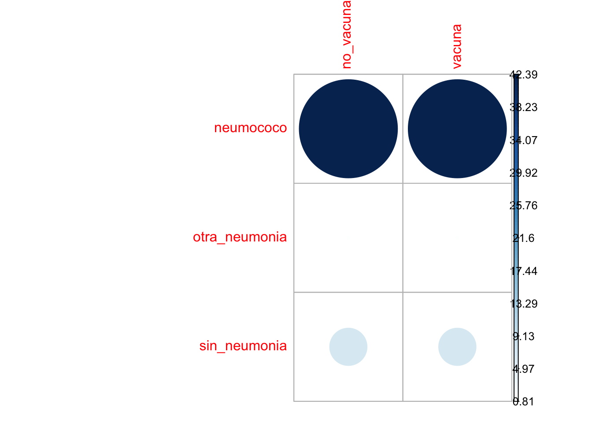
Ahora que tenemos una idea sobre cómo funcionan las pruebas de bondad de ajuste, podemos regresar a hablar sobre las pruebas de normalidad.
Supuesto de Normalidad
Como imaginarás, las pruebas de normalidad son pruebas de bondad de ajuste en donde la distribución teórica es una distribución normal, aunque el modo en el cual se evalúan las desviaciones de la normalidad (i.e., las diferencias) es diferente para cada prueba. Para aplicarlas, utilizaremos la base de datos de muestras independientes del archivo datos_t, particularmente la columna DC:
dc <- openxlsx::read.xlsx("data/datos_t.xlsx", sheet = 1)
dc
Podemos hacer una primera valoración utilizando un gráfico de densidad con un gráfico de densidad normal teórico superpuesto:
set.seed(0)
norm_plot <- ggplot(data = dc, aes(DC)) +
geom_density(fill = rgb(118,78,144, maxColorValue = 255), colour = "white", alpha = 0.5) +
stat_function(fun = dnorm, n = 100, args = list(mean = mean(dc$DC), sd = sd(dc$DC))) +
# Límites expandidos para visualizar el kde normal "completo".
#El kde observado se encuentra extendido más allá de los límites de los datos:
xlim(c(40, 65)) +
theme_bw() +
labs(title = "Gráfico de densidad de DC (morado) vs. normal teórica (línea negra)",
x = element_blank(),
y = element_blank()) +
theme(text = element_text(colour = "gray40"))
#cairo_pdf("norm_plot.pdf", height = 5, width = 5*1.6, pointsize = 20)
norm_plot
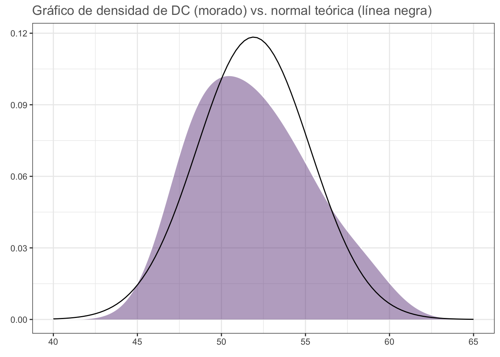
#dev.off()
¿Qué opinas? Apliquemos ahora las pruebas de normalidad:
Prueba de Shapiro-Wilk
La prueba más conocida para evaluar la normalidad de un conjunto de datos es la prueba de Shapiro-Wilk. Su estadístico de prueba (W) se calcula de una manera poco amigable, pero conceptualmente implica ordenar los valores de la muestra y evaluar las desviaciones (diferencias) con respecto a la media, la varianza y su covarianza (este concepto se retoma más adelante) esperadas. En pocas palabras, la covarianza indica cuánto cambia una variable (la media) con respecto a otra (la varianza).
¿Qué tiene que ver la covarianza con el Supuesto de Normalidad? Tiene que ver con la Segunda Propiedad Conocida de la Distribución Normal, la cual establece que Dadas observaciones aleatorias e independientes (de una distribución normal), la media muestral y la varianza muestral son independientes. En otras palabras, cuando tomas una muestra y la usas para estimar tanto la media como la varianza de la población, qué tanto puedes equivocarte sobre la media es independiente de qué tanto puedes equivocarte sobre la varianza. Esta es una característica única de la distribución normal y es una de las razones por la que la prueba de S-W es de las más (por no decir la más) utilizada y recomendada, especialmente para muestras pequeñas. En algunos estudios de simulación como este ha demostrado ser más sensible a las desviaciones de la normalidad que la prueba de Kolmogorov-Smirnov, aunque antes de explicarla apliquemos la prueba de S-W:
shapiro.test(dc$DC)
##
## Shapiro-Wilk normality test
##
## data: dc$DC
## W = 0.95125, p-value = 0.6833
El valor de p no nos permite rechazar nuestra hipótesis de nulidad a un \(\alpha = 0.05\), por lo que podemos concluir que los datos se ajustan a una distribución normal. Vuelve al gráfico de densidad normal, ¿qué opinas?
Como añadido, visualicemos la segunda propiedad conocida de la distribución normal:
means <- NA
sds <- NA
for (i in 1:1000) {
norm_data <- rnorm(10)
means[i] <- mean(norm_data)
sds[i] <- sd(norm_data)
}
mean_sd <- data.frame(mean = means, sd = sds)
prop_2 <- ggplot(data = mean_sd, aes(x = mean, y = sd)) +
geom_point(color = "dodgerblue4", size = 2, alpha = 0.5) +
theme_bw() +
labs(title = "Segunda Propiedad Conocida de la Distribución Normal",
subtitle = "1000 muestreos de una población normal",
x = "Media",
y = "Desviación Estándar") +
theme(text = element_text(colour = "gray40"))
#cairo_pdf("prop_2.pdf", family = "Montserrat", height = 5, width = 5*1.6, pointsize = 20)
prop_2
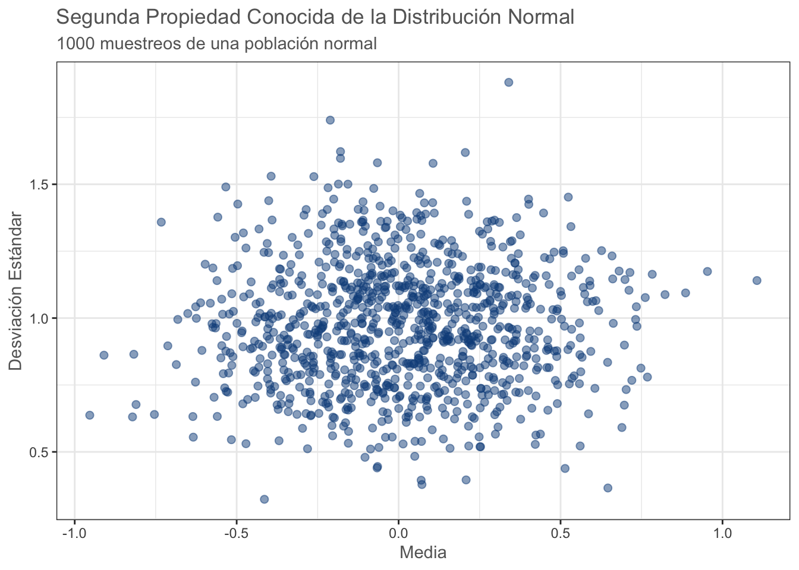
#dev.off()
Con una distribución Gamma:
means <- NA
sds <- NA
for (i in 1:1000) {
gamma_data <- rgamma(10, shape = 1)
means[i] <- mean(gamma_data)
sds[i] <- sd(gamma_data)
}
mean_sd <- data.frame(mean = means, sd = sds)
prop_g <- ggplot(data = mean_sd, aes(x = mean, y = sd)) +
geom_point(color = "dodgerblue4", size = 2, alpha = 0.5) +
theme_bw() +
labs(title = "Segunda Propiedad Conocida de la Distribución Normal",
subtitle = "1000 muestreos de una población gamma",
x = "Media",
y = "Desviación Estándar") +
theme(text = element_text(colour = "gray40"))
#cairo_pdf("prop_g.pdf", family = "Montserrat", height = 5, width = 5*1.6, pointsize = 20)
prop_g

#dev.off()
Ejericio opcional: Realiza el mismo gráfico para la columna DC y para la columna CH.
Prueba Kolmogorov-Smirnov
A diferencia de la prueba S-W, la prueba K-S compara las función de densidad acumulada empírica (observada) vs. una función de densidad acumulada teórica (no necesariamente normal), lo cual causa que sea sensible a desviaciones en el centro de la distribución pero no en las colas; sin embargo, es importante mencionar, que la prueba K-S es convergente; es decir, que conforme \(N \rightarrow \infty\) la prueba converge a la “respuesta verdadera” en términos de probabilidad. Esta razón hace que esta prueba no se recomiende para tamaños de muestra pequeños. Para aplicarla:
ks.test(dc$DC, "pnorm")
##
## One-sample Kolmogorov-Smirnov test
##
## data: dc$DC
## D = 1, p-value < 2.2e-16
## alternative hypothesis: two-sided
A diferencia del caso anterior, esta prueba si tuvo evidencia suficiente para ridiculizar nuestra hipótesis nula, por lo que podemos concluir que nuestros datos no se ajustan a una distribución normal. Vuelve nuevamente al gráfico KDE. ¿Qué opinas?
Veamos las densidades acumuladas:
# Generamos una cdf normal teórica:
cdf <- data.frame(norm = rnorm(1000, mean = mean(dc$DC), sd = sd(dc$DC)))
# Graficamos una vs. la otra:
cdfplot <- ggplot(data = dc, aes(DC)) +
stat_ecdf(geom = "step", colour = rgb(118,78,144, maxColorValue = 255), alpha = 1) +
stat_ecdf(data = cdf, aes(norm), geom = "line", colour = "black") +
theme_bw() +
labs(title = "Densidades empírica (morado) y teórica (negro) Acumuladas para DC",
x = element_blank(),
y = element_blank())
#cairo_pdf("cdf.pdf", family = "Montserrat", height = 5, width = 5*1.6, pointsize = 20)
cdfplot
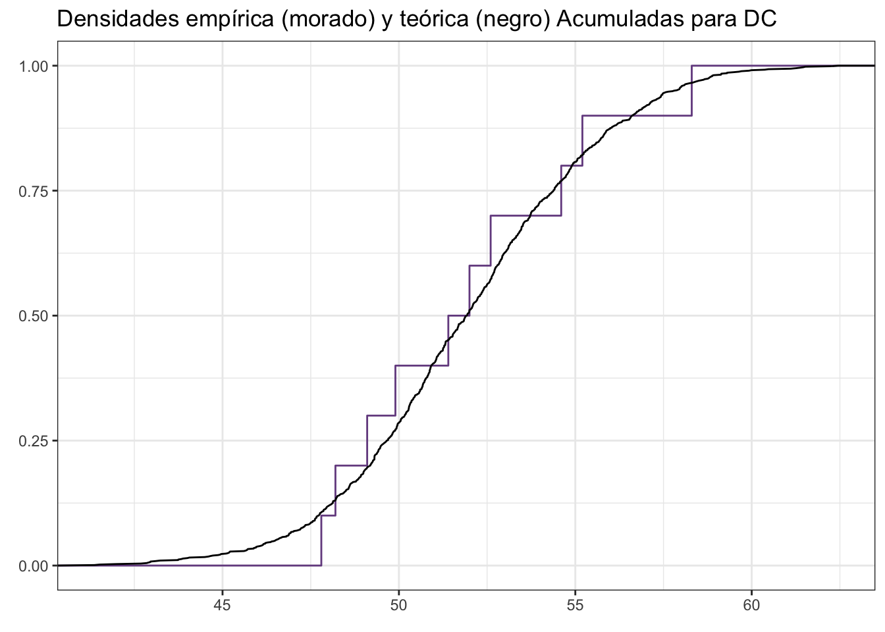
#dev.off()
Conjuntando con el gráfico kde original podemos ver por qué la prueba K-S arrojó un resultado significativo, ya que hubo desviaciones importantes en la zona central. Interpretar correctamente un gráfico CDF NO es sencillo y requiere de experiencia, por lo que únicamente lo incluí para acompañar a la prueba que se basa en la densidad acumulada.
Habiendo explicado dos de las pruebas de normalidad más comunes, pasemos a los análisis paramétricos. El primero de ellos lo revisamos durante la clase de pruebas de hipótesis: la prueba t de Student, por lo que pasaremos directamente al Análisis de la Varianza.
Análisis de la Varianza
En términos simples, podemos pensar en el ANOVA como una extensión de la prueba t-Student a más de dos grupos a comparar. Durante la clase de Comparaciones Multivariadas abordamos el riesgo que conlleva realizar múltiples pruebas de hipótesis (comparaciones) en nuestros datos; es decir, el problema de realizar dos o más comparaciones entre grupos como si se tratara de pruebas independientes. Por el momento, solo ten en mente que se incrementa la posibilidad de obtener un falso positivo únicamente por azar, por lo que hay que utilizar una técnica adecuada y es ahí donde entra el ANOVA o, mejor dicho, los ANOVAs. Como te imaginarás, estas pruebas nos permiten comparar medias entre más de dos grupos, aunque aquí la comparación se realiza de manera global y la hipótesis alternativa se expresa como “Al menos una de las medias es diferente”. Esto quiere decir que el ANOVA no nos dirá entre qué par(es) de grupos se encontraron las diferencias, sino que habrá que acompañarlo de una prueba post-hoc. Esta prueba es la prueba de diferencias honestas (HSD) de Tukey, la cual se encuentra basada en la distribución de los rangos estudentizados y fue diseñada para no incrementar la probabilidad de falsos positivos al realizar múltiples comparaciones. En esta sesión revisaremos tres modaliades de ANOVA: de una vía, de dos vías y factorial, de menor a mayor complejidad, aunque estos no son los únicos. Entre los demás diseños de ANOVA se encuentran el ANOVA de medidas repetidas (estudios de crecimiento en laboratorio con medidas intermedias entre el inicio y el final, por ejemplo) o el ANOVA anidado, en el cual el diseño es similar a una muñeca rusa.
Antes de aplicar y explicar los modelos de ANOVA, es necesario desarrollar una intuición sobre el procedimiento. El nombre “Análisis de Varianza” viene de que, literalmente, se utilizan las varianzas para comparar las medias. Aunque el proceso matemático implica calcular promedios de promedios, varias sumas de cuadrados y cuadrados medios del error, podemos resumirlo para fines prácticos en que la comparación se realiza mediante una razón/cociente, tal que:
\[F = \frac{\sigma^2_{entre}}{\sigma^2_{dentro}}\]
Sé que esto puede sonar muy poco intuitivo, pero si nos detenemos un poco a analizar la ecuación podemos darle mucho sentido. La varianza dentro de los grupos podemos considerarla como la varianza “promedio” de cada grupo (razón por la que es importante que estas sean homogéneas entre todos nuestros grupos), mientras que la varianza entre los grupos representa la “separación” (dispersión) entre los grupos (sin considerar el error). Partiendo de esto, es evidente que si la varianza entre grupos es muy grande en relación a la varianza dentro de los grupos podemos inferir que existe un efecto del factor de agrupamiento pues “no hay” (ojo a las comillas y los supuestos) otra forma de que las distribuciones de los grupos se desplacen.
Gráficamente la varianza dentro de los grupos se representaría de la siguiente manera:
anov_sim <- data.frame(grupo = as.factor(c(rep("A", 1000), rep("B", 1000))),
y = c(rnorm(1000, mean = 10, sd = 1), rnorm(1000, mean = 20, sd = 1)))
dentro_plot <- ggplot(data = anov_sim, aes(y, fill = grupo, alpha = 0.5)) +
geom_density(trim = T, show.legend = F, colour = "white") +
theme_minimal() +
labs(title = "Varianza dentro de los grupos",
x = element_blank(),
y = element_blank()) +
scale_y_continuous(labels = NULL) +
xlim(c(5, 25))
dentro_plot
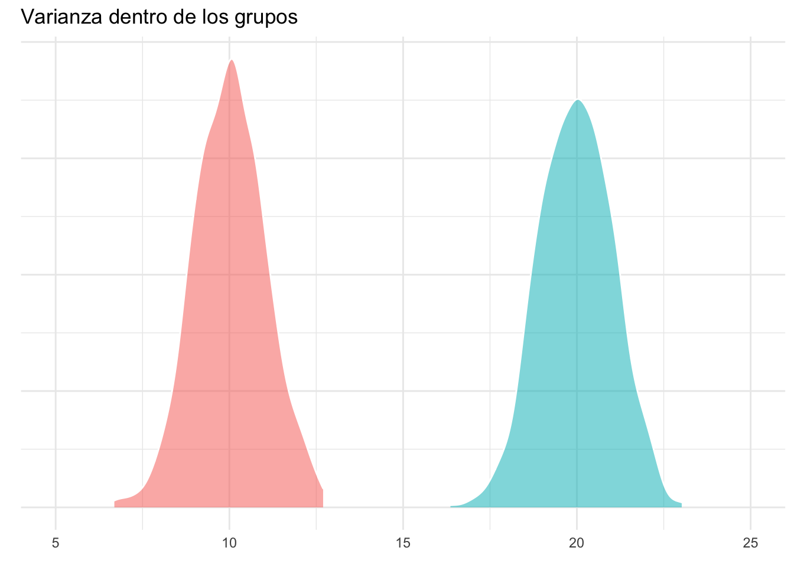
Mientras que la varianza entre los grupos podemos, para fines de interpretación, visualizarla como la varianza dada por ambos grupos. En realidad esto representaría la varianza total y la varianza entre los grupos es el resultado de eliminar la varianza dada por el error, pero sigamos con el ejemplo:
anov_sim$tot <- rnorm(200, mean = 15, sd = sd(anov_sim$y))
entre_plot <- ggplot(data = anov_sim, aes(tot)) +
geom_density(fill = "dodgerblue4", alpha = 0.5, colour = "white") +
theme_minimal() +
labs(title = "Varianza entre los grupos",
x = element_blank(),
y = element_blank()) +
scale_y_continuous(labels = NULL) +
xlim(c(5, 25))
entre_plot
## Warning: Removed 90 rows containing non-finite values (stat_density).
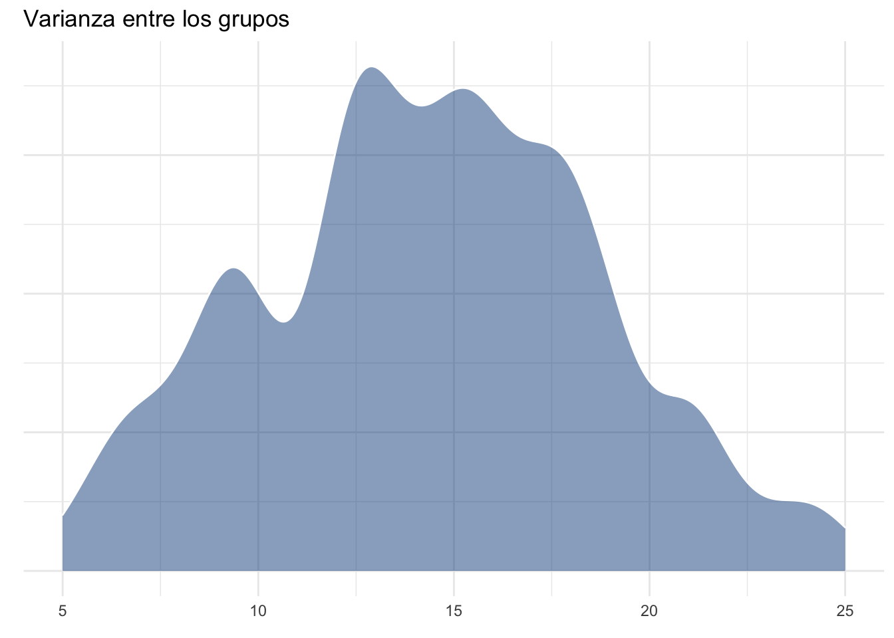
Visualizándolas como si de un cociente se tratara es posible darse cuenta cómo la varianza “entre” los grupos es mucho mayor que la varianza dentro de los grupos, lo cual daría un valor de la razón de varianzas muy alto, sugiriendo un efecto del factor de agrupamiento.
#cairo_pdf("anova_plot.pdf", family = "Montserrat", height = 5, width = 5*1.6, pointsize = 20)
gridExtra::grid.arrange(entre_plot, dentro_plot)
## Warning: Removed 90 rows containing non-finite values (stat_density).
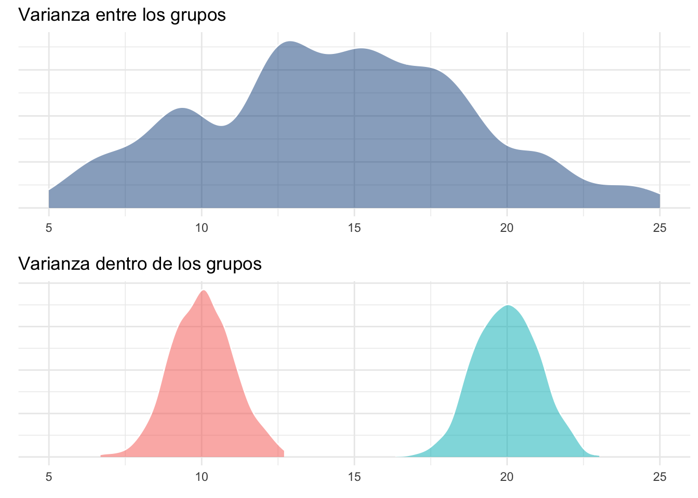
#dev.off()
Veamos qué pasa cuando las medias son más cercanas entre sí:
anov_sim2 <- data.frame(grupo = as.factor(c(rep("A", 1000), rep("B", 1000))),
y = c(rnorm(1000, mean = 10, sd = 1), rnorm(1000, mean = 11, sd = 1)))
anov_sim2$tot <- rnorm(2000, mean(10.5), sd(anov_sim2$y))
dentro_plot2 <- ggplot(data = anov_sim2, aes(y, fill = grupo, alpha = 0.5)) +
geom_density(trim = T, show.legend = F, colour = "white") +
theme_minimal() +
labs(title = "Varianza dentro de los grupos",
x = element_blank(),
y = element_blank()) +
scale_y_continuous(labels = NULL) +
xlim(c(5, 15))
entre_plot2 <- ggplot(data = anov_sim2, aes(tot)) +
geom_density(fill = "dodgerblue4", alpha = 0.5, colour = "white") +
theme_minimal() +
labs(title = "Varianza entre los grupos",
x = element_blank(),
y = element_blank()) +
scale_y_continuous(labels = NULL) +
xlim(c(5, 15))
#cairo_pdf("anova_plot2.pdf", family = "Montserrat", height = 5, width = 5*1.6, pointsize = 20)
gridExtra::grid.arrange(entre_plot2, dentro_plot2)
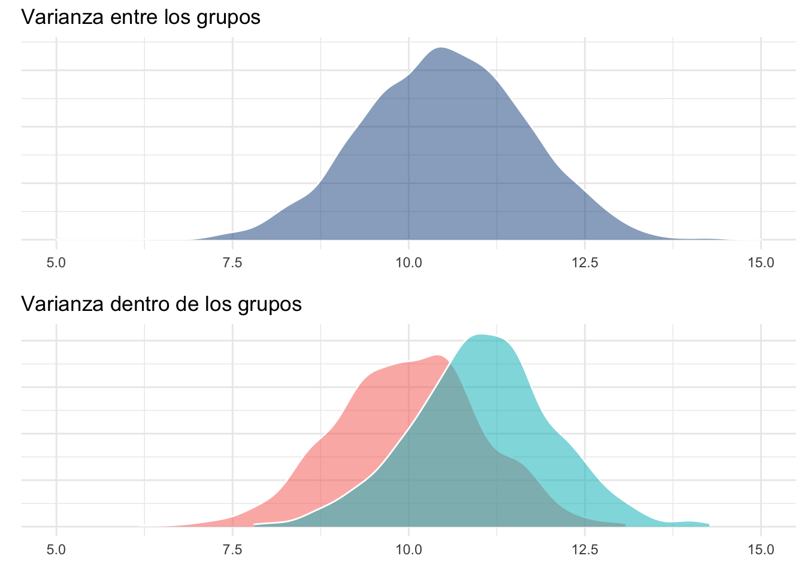
#dev.off()
Supuesto de homogeneidad de Varianzas
Como podrás imaginar, el que las varianzas de los grupos no sean homogéneas generará un sesgo al momento de calcular el cociente y, en consecuencia, el nivel de significancia de la prueba. Esto es lo que da origen al Supuesto de Homogeneidad de Varianzas. Existe una gran diversidad de pruebas, cada una con sus consideraciones, fortalezas y desventajas, pero analizaremos únicamente las (posiblemente) más conocidas.
Prueba de Bartlett
La prueba de Bartlett se considera como la prueba Uniformemente Más Poderosa; es decir, la que es menos propensa a cometer un falso negativo para cualquier valor de \(\alpha\). Este poder, sin embargo, tiene sus bemoles o su bemol, mejor dicho. Esta prueba se apoya TOTALMENTE en que la variable de interés en cada factor se encuentra normalmente distribuída (¡Hola de nuevo, Supuesto de Normalidad!). De violarse este supuesto el valor de \(\alpha_v\) (verdadero) para la prueba puede ser mayor o menor al definido por nosotros (\(\alpha_n\), nominal). De manera particular, si la distribución de la variable analizada presenta una curtosis negativa el \(\alpha_v\) será menor al nominal, mientras que con una curtosis positiva será el caso contrario. Esto lleva a que hagamos una prueba más o menos estricta de lo que habíamos planeado originalmente y que nuestros resultados no sean confiables. De cualquier manera, veamos cómo aplicarla:
bartlett.test(y~grupo, data = anov_sim)
##
## Bartlett test of homogeneity of variances
##
## data: y by grupo
## Bartlett's K-squared = 0.4309, df = 1, p-value = 0.5115
En este caso, no podemos ridiculizar nuestra hipótesis de nulidad, por lo que podemos concluir que las varianzas entre nuestros grupos son homogéneas (y deben serlo, pues así las especificamos).
Prueba de Levene
Es la alternativa recomendada por muchos a la prueba de Bartlett. Aunque no es tan poderosa, sí es robusta a las violaciones al supuesto de normalidad, de modo que el \(\alpha\) verdadero es muy similar al nominal para una gran cantidad de distribuciones, aunque es insensible a distribuciones simétricas con colas altas como la t de Student o doble exponencial (también conocida como distribución de Laplace). Aplicarla también es sumamente sencillo:
car::leveneTest(y~grupo, data = anov_sim)
Como era de esperarse, el resultado es consistente con la prueba de Bartlett para este caso.
ANOVA de una sola vía
Habiendo revisado los conceptos básicos detrás del ANOVA, podemos pasar a aplicar algunos modelos. El más sencillo es el ANOVA de una sola vía, el cual es el caso más sencillo; es decir, comparamos una sola variable numérica entre los niveles de un solo factor (pesos finales para tres alimentos distintos, por ejemplo). Para ejemplificarlo utilizaremos la base datos1 que se trabajó para la tarea de Intervalos de confianza, con una columna extra: id, el cual es un identificador para cada individuo. Esta columna fue añadida únicamente para ejemplificar un caso de ANOVA posterior. En este ejemplo, compararemos los pesos totales entre los tres periodos (OJO: este es un diseño para un ANOVA factorial, únicamente lo utilizaremos como ejemplo).
El primer paso es, evidentemente, cargar la base de datos:
df <- read.table("data/Datos1.csv", header = F, skip = 1, sep = ",")
colnames(df) <- c("Dieta", "Periodo", "Rep", "LT", "PT", "id")
df$Periodo <- factor(df$Periodo, levels = c("I", "M", "F"))
head(df)
Comprobación de supuestos
El segundo paso es la comprobación de supuestos. Primero el de Normalidad:
#Normalidad
## Data.frame a llenar
norm <- data.frame(grupo = NA, W = NA, p = NA)
## Niveles a probar:
lvls <- levels(df$Periodo)
for (i in seq_along(lvls)) {
temp <- shapiro.test(df$PT[df$Periodo == lvls[i]])
norm[i,] <- c(lvls[i], temp$statistic, temp$p.value)
}
norm
La prueba de S-W sugiere que no hay desviaciones significativas de la normalidad. Corroboremos con un gráfico de violín. Al parecer, los resultados son coherentes con la distribución de los datos.
ggplot(data = df, aes(x = Periodo, y = PT, fill = Periodo)) +
geom_violin(alpha = 0.5, show.legend = F) +
labs(title = "Distribución de PT en los tres momentos de medición",
x = element_blank(),
y = element_blank()) +
theme_bw()
## Warning: Removed 22 rows containing non-finite values (stat_ydensity).
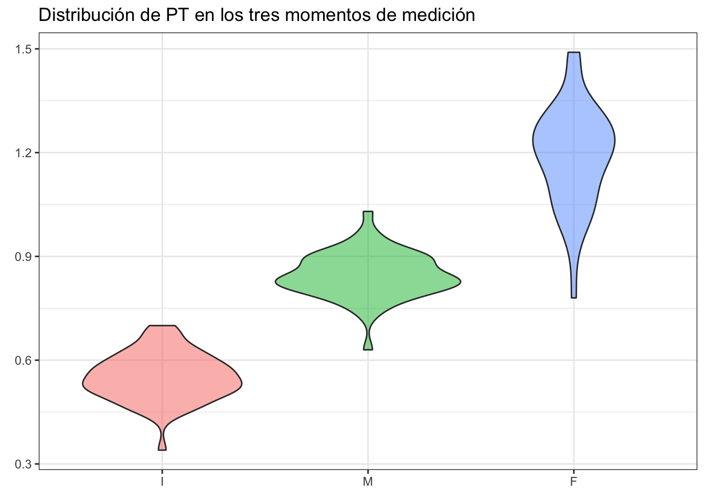
Ahora el supuesto de igualdad de varianzas, utilizando la prueba de Levene. Podemos concluir que las varianzas no son homogéneas, por lo que la recomendación sería recurrir a una prueba no paramétrica; sin embargo, sigamos con el ejercicio y escalando la complejidad del análisis antes de saltar apresuradamente a conclusiones.
car::leveneTest(PT~Periodo, data = df)
Aplicación del ANOVA
El siguiente paso es aplicar el ANOVA. El valor de p es bastante bajo, lo cual ridiculiza nuestra hipótesis de nulidad y concluimos que al menos un par de medias son significativamente diferentes entre sí (F(2, 155) = 574.3; p < 0.0001).
una_via <- aov(PT~Periodo, data = df)
summary(una_via)
## Df Sum Sq Mean Sq F value Pr(>F)
## Periodo 2 10.600 5.300 574.3 <2e-16 ***
## Residuals 155 1.431 0.009
## ---
## Signif. codes: 0 '***' 0.001 '**' 0.01 '*' 0.05 '.' 0.1 ' ' 1
## 22 observations deleted due to missingness
Prueba post-hoc
El último paso es aplicar la prueba post-hoc. Esta prueba se construye a partir de la distribución de rangos estudentizados, y fue diseñada para evitar el conflicto entre el \(\alpha\) y el número de comparaciones, por lo que la interpretación del valor de p es directa. En este caso, el valor de p fue muy pequeño para las tres comparaciones, por lo que rechazamos nuestra hipótesis de nulidad en los tres casos. El resto de la tabla es también informativo, pues nos indica la magnitud de las diferencias y sus intervalos de confianza (tal y como en la prueba t de Student):
TukeyHSD(una_via)
## Tukey multiple comparisons of means
## 95% family-wise confidence level
##
## Fit: aov(formula = PT ~ Periodo, data = df)
##
## $Periodo
## diff lwr upr p adj
## M-I 0.2949615 0.2518882 0.3380349 0
## F-I 0.6376957 0.5931429 0.6822484 0
## F-M 0.3427341 0.2967181 0.3887501 0
Con esos 4 pasos terminamos nuestro ANOVA de una vía. Pasemos entonces al ANOVA de dos vías.
ANOVA de dos vías
Si una vía es a un factor, dos vías es a dos factores. En este análisis compararemos el efecto de ambos factores simultáneamente, pero de manera independiente; es decir, aunque se hará la comparación para ambos, no se considerará la interacción entre ellos. Nuestro segundo factor será la Dieta. Los pasos son exactamente los mismos que en el anterior:
Comprobación de Supuestos
Dado que ya comprobamos los supuestos para el factor Periodo, solo habrá que hacerlo para el factor Dieta:
#Normalidad
df$Dieta <- factor(df$Dieta, levels = c("A", "B", "C"))
## Data.frame a llenar
norm <- data.frame(grupo = NA, W = NA, p = NA)
## Niveles a probar:
lvls <- levels(df$Dieta)
for (i in seq_along(lvls)) {
temp <- shapiro.test(df$PT[df$Dieta == lvls[i]])
norm[i,] <- c(lvls[i], temp$statistic, temp$p.value)
}
norm
Debido a que el factor dieta incluye el efecto del periodo de medición y detectamos diferencias entre ellos, es esperable que no se cumpla el supuesto de normalidad. En este caso, el diseño sería mejor analizado utilizando un ANOVA factorial que uno de dos vías pero, al igual que en el caso anterior, seguiremos únicamente para fines ilustrativos.
Para la homogeneidad de varianzas la interpretación es la misma, aunque la consecuencia es la contraria. No violamos el supuesto de homogeneidad de varianzas debido a que tampoco se violó entre los periodos. Esto da un poco más de respaldo a seguir con el análisis, pues es más robusto a la violación del supuesto de normalidad que al de homogeneidad de varianzas.
car::leveneTest(PT~Dieta, data = df)
Aplicación del ANOVA.
El ANOVA de dos vías es un caso especial del ANOVA factorial, en el cuál únicamente hay dos factores y NO se considera su interacción, por lo que el modo de declararlo es una fórmula en la cuál los factores se consideran de manera aditiva. La forma tradicional de reportar los resultados de este ANOVA sería: hubo un efecto significativo de las dietas (F(2, 153) = 11.45; p < 0.0001) y de los periodos (F(2, 153) = 560.42; p < 0.0001).
dos_vias <- aov(PT~Dieta+Periodo, data = df)
summary(dos_vias)
## Df Sum Sq Mean Sq F value Pr(>F)
## Dieta 2 0.212 0.106 11.45 2.33e-05 ***
## Periodo 2 10.399 5.199 560.42 < 2e-16 ***
## Residuals 153 1.419 0.009
## ---
## Signif. codes: 0 '***' 0.001 '**' 0.01 '*' 0.05 '.' 0.1 ' ' 1
## 22 observations deleted due to missingness
Prueba post-hoc.
En este caso tuvimos valores de p muy pequeños para ambos factores, realicemos la prueba HSD de Tukey. Al ver la salida puedes interpretar que esta es una lista, y que podríamos acceder a los resultados de cualquier factor utilizando el operador $ (TukeyHSD(aov_obj)$factor). Aquí, las diferencias se encontraron entre la dieta C y las otras dos, pero no entre A y B.
TukeyHSD(dos_vias)
## Tukey multiple comparisons of means
## 95% family-wise confidence level
##
## Fit: aov(formula = PT ~ Dieta + Periodo, data = df)
##
## $Dieta
## diff lwr upr p adj
## B-A -0.02402094 -0.06672932 0.01868745 0.3801380
## C-A -0.09036834 -0.13594353 -0.04479315 0.0000176
## C-B -0.06634740 -0.11227232 -0.02042249 0.0023101
##
## $Periodo
## diff lwr upr p adj
## M-I 0.2912145 0.2480228 0.3344062 0
## F-I 0.6266462 0.5819709 0.6713214 0
## F-M 0.3354316 0.2892891 0.3815741 0
Considerando el diseño factorial de la base de datos, ¿cómo interpretarías estos resultados? ¿podemos confiar en ellos? La respuesta que yo esperaría es que no, pues si el experimento fue bien diseñado al inicio todos los animales debían tener aproximadamente las mismas características y vimos tanto gráficamente como en ambos ANOVAs que hubo un crecimiento. Veamos qué pasa con las distribuciones utilizando un gráfico de interacción.
ggplot(data = df, aes(x = Dieta, y = PT, fill = Periodo)) +
geom_violin(alpha = 0.5, show.legend = T) +
labs(title = "Distribución de PT en los tres momentos de medición",
x = element_blank(),
y = element_blank()) +
theme_bw()
## Warning: Removed 22 rows containing non-finite values (stat_ydensity).
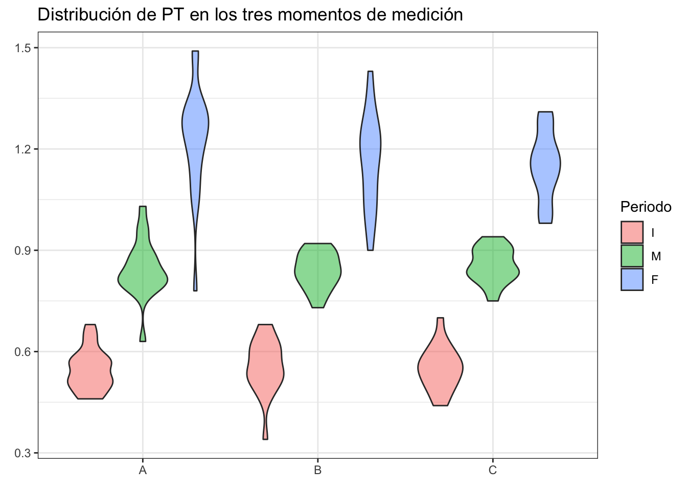
Es evidente que en los tres tratamientos hubo un crecimiento, el cual además parece haber sido bastante similar. Este es un ejemplo del error de tipo III que mencionaba en la clase de pruebas de hipótesis: utilizar la matemática correcta para responder la pregunta equivocada. Veamos qué pasa si realizamos un ANOVA factorial.
ANOVA factorial
Como te podrás imaginar a partir de lo mencionado sobre el ANOVA de dos vías, este ANOVA es la versión más generalizada en la cual podemos utilzar más de dos factores y además analizar su interacción. Sigamos con la base anterior, en este caso considerando también el factor réplica:
df$Rep <- factor(df$Rep, levels = c("A", "B"))
Comprobación de supuestos
No hay sorpresas en ninguno de los dos casos, las interpretaciones de los resultados son las mismas que en el caso anterior; es decir, este NO es el modo correcto de comprobar la normalidad. Cuando hablemos del ANOVA de medidas repetidas veremos un ejemplo de cómo hacerlo de manera correcta (normalidad de un factor dados los niveles del otro factor).
## Data.frame a llenar
norm <- data.frame(grupo = NA, W = NA, p = NA)
## Niveles a probar:
lvls <- levels(df$Rep)
for (i in seq_along(lvls)) {
temp <- shapiro.test(df$PT[df$Rep == lvls[i]])
norm[i,] <- c(lvls[i], temp$statistic, temp$p.value)
}
norm
car::leveneTest(PT~Rep, data = df)
Aplicación del ANOVA
La única diferencia con el caso anterior es que esta vez utilizaremos el operador * para añadir los nuevos términos, en vez de hacerlo de forma aditiva. Haciendo esto la tabla del ANOVA cambia, en donde primero aparece el efecto de cada factor analizado de manera independiete (como si hubieramos hecho un ANOVA de “tres vías”) y después los términos de interacción. La interacción entre dos factores representa un efecto combinado de los factores involucrados en la variable analizada; es decir, cuando hay interacción entre dos factores el efecto de uno “depende” del el nivel del otro.
fact <- aov(PT~Dieta*Periodo*Rep, data = df)
summary(fact)
## Df Sum Sq Mean Sq F value Pr(>F)
## Dieta 2 0.212 0.106 12.185 1.32e-05 ***
## Periodo 2 10.399 5.199 596.509 < 2e-16 ***
## Rep 1 0.060 0.060 6.874 0.00971 **
## Dieta:Periodo 4 0.053 0.013 1.522 0.19912
## Dieta:Rep 2 0.001 0.000 0.038 0.96240
## Periodo:Rep 2 0.048 0.024 2.755 0.06703 .
## Dieta:Periodo:Rep 4 0.038 0.009 1.076 0.37066
## Residuals 140 1.220 0.009
## ---
## Signif. codes: 0 '***' 0.001 '**' 0.01 '*' 0.05 '.' 0.1 ' ' 1
## 22 observations deleted due to missingness
Prueba post-hoc
En este caso el único término de interacción con resultados significativos es la interacción entre Periodo y Réplica (Periodo:Rep), lo cual indica que el comportamiento de los periodos fue diferente entre réplicas. Realicemos las pruebas post-hoc correspondientes. Aunque encontramos un efecto significativo de las réplicas, este factor únicamente tiene dos niveles, por lo que realizar la prueba post-hoc es ocioso y, por tanto, la realizaremos únicamente para Periodo:Rep. Nota que debido a la presencia del operador : en el nombre del término es necesario utilizar comillas para poder acceder a ese atributo:
TukeyHSD(fact)$"Periodo:Rep"
## diff lwr upr p adj
## M:A-I:A 0.28301798 0.20959477 0.35644118 4.152234e-14
## F:A-I:A 0.66044327 0.58556599 0.73532054 1.265654e-14
## I:B-I:A -0.02480111 -0.09480740 0.04520517 9.092990e-01
## M:B-I:A 0.27169429 0.19681702 0.34657157 6.084022e-14
## F:B-I:A 0.55653205 0.47803934 0.63502476 1.265654e-14
## F:A-M:A 0.37742529 0.30254802 0.45230257 1.265654e-14
## I:B-M:A -0.30781909 -0.37782537 -0.23781281 1.376677e-14
## M:B-M:A -0.01132368 -0.08620096 0.06355359 9.979453e-01
## F:B-M:A 0.27351408 0.19502137 0.35200679 6.727952e-14
## I:B-F:A -0.68524438 -0.75677422 -0.61371454 1.265654e-14
## M:B-F:A -0.38874898 -0.46505261 -0.31244534 1.265654e-14
## F:B-F:A -0.10391121 -0.18376573 -0.02405669 3.335386e-03
## M:B-I:B 0.29649541 0.22496556 0.36802525 1.909584e-14
## F:B-I:B 0.58133317 0.50602701 0.65663933 1.265654e-14
## F:B-M:B 0.28483776 0.20498324 0.36469228 6.306067e-14
Vemos que prácticamente todos los contrastes fueron significativos, con excepción del periodo inicial (p = 0.9). Esto sugeriría que el comportamiento de las réplicas no fue homogéneo a través del tiempo. Si regresamos brevemente a la tabla del ANOVA veremos que hubo 22 observaciones faltantes, las cuales corresponden a la mortalidad durante el experimento y podrían también explicar estos cambios. Debido a la impraciticidad/imposibilidad de marcar o identificar cada guppy no es posible aplicar un anova de medidas repetidas con estos datos; sin embargo, podemos ejemplificarlo con otros datos.
ANOVA de medidas repetidas
El ANOVA de medidas repetidas es otro de los modelos de ANOVA, el cual podemos considerar como una extensión de la prueba t para muestras dependientes; es decir, en la cual los mismos individuos fueron medidos en más de dos ocasiones, denominado ANOVA de medidas repetidas de una vía. Si tenemos no solo los distintos tiempos de medición sino también factores adicionales entonces tendremos ANOVAs de medidas repetidas de dos vías (tiempo y un factor adicional) o de tres vías (tiempo y dos factores adicionales). Al igual que en el ANOVA “normal” comencemos desde abajo con el de una vía.
ANOVA de medidas repetidas de una vía
Carguemos los datos de ejemplo (selfesteem de la librería datarium), los cuales son una medida de autoestima medida en tres ocasiones distintas:
data("selfesteem", package = "datarium")
head(selfesteem)
La base se encuentra en formato corto, por lo que habrá que pasarla a formato largo:
estima <- reshape2::melt(selfesteem, # Datos a modificar
id.vars = "id", # Identificador para cada individuo
measure.vars = c("t1", "t2", "t3"), # Variables en columnas
variable.name = "tiempo", # Nombre de la nueva variable de agrupamiento
value.name = "estima") # Nombre de la nueva variable medida
head(estima)
Comprobación de supuestos
Para agilizar las cosas (y un poco a mi pesar), utilicemos dplyr para aplicar la prueba de normalidad a los niveles de Periodo. Tidyverse es algo así como un dialecto dentro de R, compuesto de múltiples librerías, en donde el código se puede encadenar para hacerlo más compacto y, según algunos, más legible. “A mi pesar” porque no considero buena práctica didáctica enseñarlo a quienes van comenzando a adquirir experiencia, pues añade un paso más de abstracción al proceso. Habiendo dicho esto, el encadenamiento lo indicamos con el operador %>% (pipe), y lo que hacemos es que lo que está a la izquierda se lo pasamos como argumento a lo que está a la derecha. Esto te sonará familiar a la forma de construir gráficos en ggplot2 y con justa razón, pues también forma parte del Tidiverse. Como último comentario al respecto, las funciones de las distintas librerías de Tidiverse pueden utilizarse con la sintaxis de R “normal” y viceversa, las funciones de R “normal” pueden utilizarse con el operador de encadenamiento. Con esto quiero decir que no es necesario utilizar únicamente una u otra opción, sino que podemos aplicarlas a nuestra conveniencia (esa es la idea de escribir nuestro código ;)) Apliquemos entonces la prueba de Shapiro-Wilk a los datos agrupados:
# Toma el data.frame, agrúpalo por tiempo y para cada nivel aplica la función shapiro_test a la columna estima:
estima %>% group_by(tiempo) %>% shapiro_test(estima)
Ahora la homocedasticidad o, mejor dicho, el supuesto de esfericidad. Este supuesto es una “extensión” del supuesto de homogeneidad de varianzas. Definimos esfericidad como la condición en la que las varianzas de las diferencias entre todas las combinaciones de los niveles de interés son iguales. La violación de este supuesto conlleva un incremento en la probabilidad de un falso positivo; es decir, vuelve a la prueba demasiado “liberal” o “crédula”. Aunque este supuesto es sumamente importante, no necesitamos probarlo directamente, pues la función con la que implementaremos el análisis hace la prueba correspondiente (prueba de Mauchly para esfericidad) y, además, aplica una corrección (corrección de Greenhouse-Geisser) a los grados de libertad de aquellos factores que violen el supuesto.
Aplicación del ANOVA
Esta vez no utilizaremos la notación de fórmula ni tan siquiera la función aov, sino que recurriremos a la función anova_test() de la librería rstatix para hacer más intuitiva la declaración, donde data es el data.frame con los datos (dah!), dv es la variable dependiente; es decir, nuestra variable a comparar, wid es un identificador único para cada individuo y within el factor dentro del cual queremos hacer las comparaciones:
anova_rep1 <- rstatix::anova_test(data = estima, dv = estima, wid = id, within = tiempo)
get_anova_table(anova_rep1)
Lo primero que llama la atención es que la tabla de ANOVA reporta resultados para una prueba de tipo III. OJO! esto no tiene nada que ver con el error tipo III que mencioné en la clase de pruebas de hipótesis (ese error no es formal). El tipo de prueba hace referencia al tipo de ANOVA que se está realizando o, mejor dicho, al modo en el que se calculan las sumas de cuadrados. Si te interesa leer más al respecto, visita este o este enlace.
Otra cosa que debe llamar tu atención es el término ges. Este es el factor de corrección de Greenhouse-Geisser a los grados de libertad. El modo de reportar estos resultados sería algo como “las medidas de autoestima a través del tiempo fueron significativamente diferentes (F(2,18) = 55.5, p < 0.0001; \(\eta^2\) generalizado = 0.82)”. El término \(\eta^2\) generalizado lo puedes encontrar también como \(\hat{\epsilon}\).
Prueba post-hoc
Debido a que las medidas son repetidas, no podemos aplicar la prueba de diferencias honestas de Tukey, pero sí podemos aplicar pruebas t de Student pareadas y corregir el valor de p con una corrección de Bonferroni. En la sección de multivariado se abordará esta corrección, pero entiéndela en este momento como el modo de evitar que incrementemos la probabilidad de un falso positivo y, en consecuencia, deberemos de interpretar los valores de la columna p.adj. Viendo la tabla, es posible concluir que hubo diferencias entre las medidas de autoestima en los tres periodos.
pwt <- pairwise_t_test(data = estima, estima~tiempo, paired = T, p.adjust.method = "bonferroni")
pwt
ANOVA de medidas repetidas de dos vías
Al igual que en el ANOVA “normal”, hablamos de dos vías cuando tenemos dos factores, en este caso son el tiempo y alguno adicional. Para ejemplificarlo utilizaremos la base de datos selfesteem2 de datarium.
data("selfesteem2", package = "datarium")
estima2 <- reshape2::melt(selfesteem2, # Datos a modificar
id.vars = c("id", "treatment"), # Identificadores para cada individuo
measure.vars = c("t1", "t2", "t3"), # Variables en columnas
variable.name = "tiempo", # Nombre de la nueva variable de agrupamiento
value.name = "estima") # Nombre de la nueva variable medida
head(estima2)
Comprobación de supuestos
Al igual que en el ANOVA de medidas repetidas, únicamente comprobaremos el Supuesto de Normalidad, solo que aquí lo haremos considerando la “anidación” de los factores; es decir, que las medidas repetidas fueron para cada tratamiento:
estima2 %>% group_by(treatment, tiempo) %>% shapiro_test(estima)
Aparentemente hubo desviaciones de la normalidad en el t1 para el grupo control. Podemos corroborarlo con un gráfico QQ. Aparentemente es culpa de de algunos puntos ligeramente fuera del resto de la tendencia ubicados en el centro. Recordemos que el ANOVA es robusto a ciertas violaciones de la normalidad, y en este caso no parecen ser especialmente serias. Sigamos con el análisis.
ggpubr::ggqqplot(estima2, "estima", ggtheme = theme_bw()) + facet_grid(tiempo~treatment, labeller = "label_both")
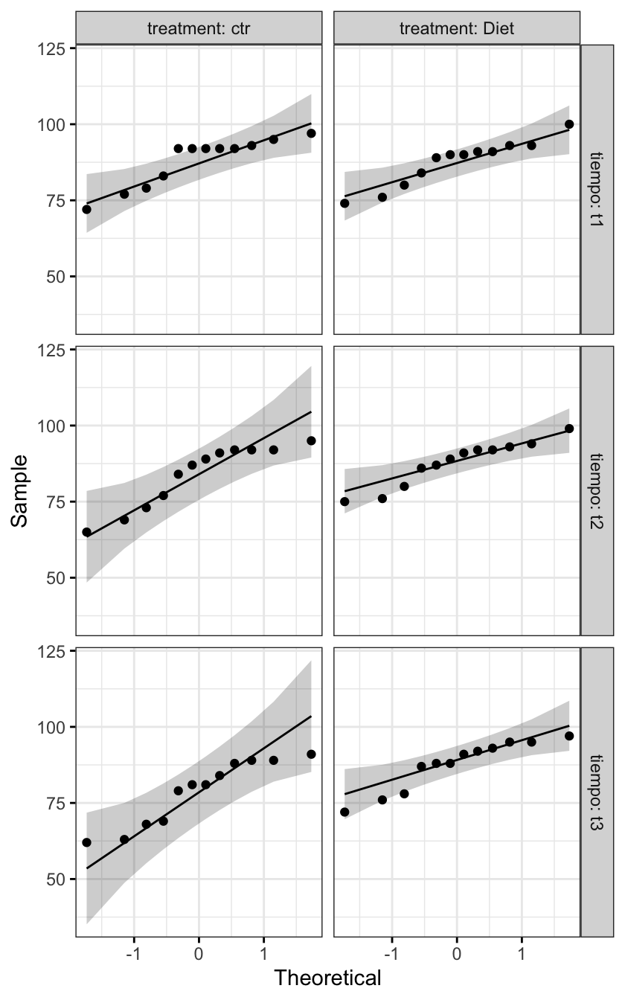
Aplicación del ANOVA
Utilizaremos la misma estructura que en el caso anterior; la unica diferencia es que al argumento within le pasaremos un vector con dos factores:
anova_rep2 <- anova_test(data = estima2, dv = estima, wid = id, within = c(treatment, tiempo))
get_anova_table(anova_rep2)
De la tabla podemos concluir que todos los contrastes fueron significativos, lo cual indica que hubo diferencias entre los tratamientos (F(1, 11), = 15.5; p = 0.02), entre los tiempos (F(1.31, 14.37), = 27.4; p < 0.0001) y tambien un efecto combinado (F(2,22) = 30.4; p < 0.0001). Debido a que los efectos principales (“solos”) no son suficientes para describir los datos, el proceso post-hoc es un poco más complicado que en el caso anterior.
Pruebas post-hoc
Debido a la significancia del término de interacción es necesario descomponerlo en:
- Efecto principal simple; es decir, un modelo de una vía de la primera variable para cada nivel de la segunda. Debido a que hacerlo a mano es un poco tedioso, encadenemos el proceso:
anova_rep2_post1 <- estima2 %>%
group_by(tiempo) %>% # Agrupa la base por cada nivel de tiempo
anova_test(dv = estima, wid = id, within = treatment) %>% # Aplica un ANOVA de medidas repetidas para cada nivel
get_anova_table() %>% # Extrae los resultados
adjust_pvalue(method = "bonferroni") # Ajusta los valores de p
anova_rep2_post1
- Aplicar una prueba t de Student para datos dependientes en los términos significativos. Debido a que tratamiento tiene solo dos niveles, realizar este proceso es redundante; de hecho, los valores de p serán iguales a los mostrados atrás; sin embargo, hagámoslo con fines demostrativos:
pwt_2 <- estima2 %>%
group_by(tiempo) %>%
pairwise_t_test(estima~treatment, paired = T, p.adjust.method = "bonferroni")
pwt_2
Esto es todo para la clase de hoy. Es una clase bastante extensa y aún con ello se quedaron fuera algunas variantes de ANOVA; sin embargo, creo que estos cubren los casos más generales. ¡Nos vemos en la siguiente!
